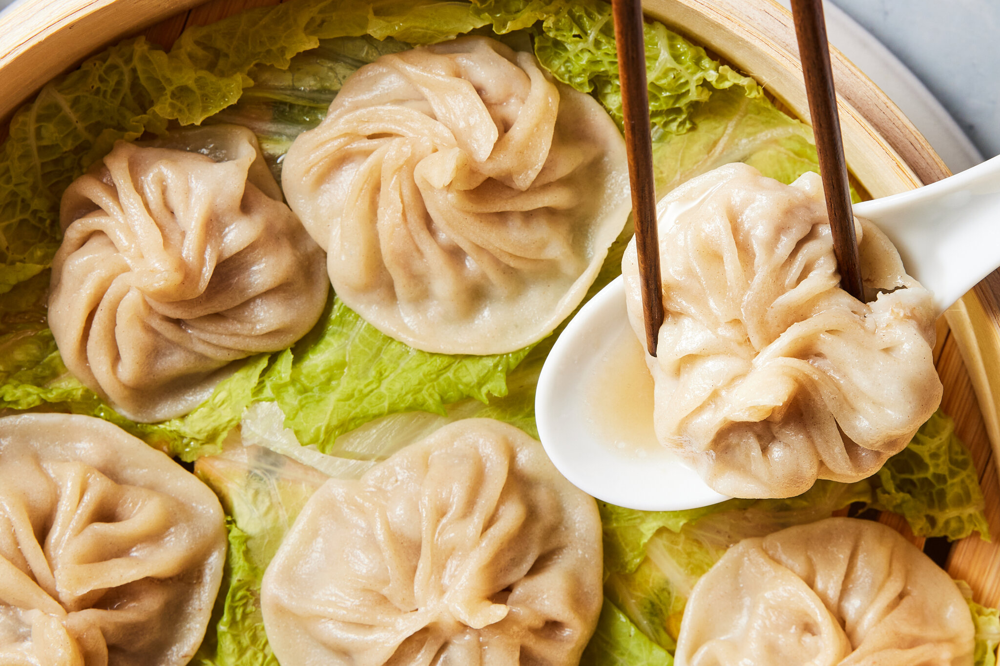
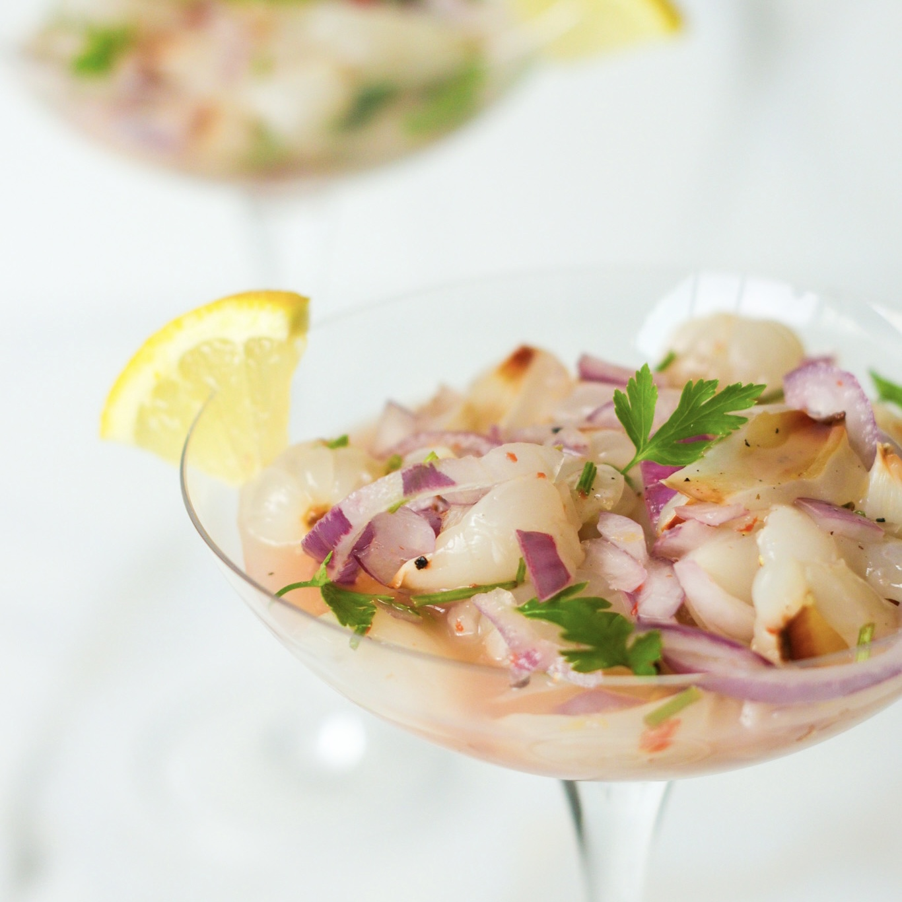
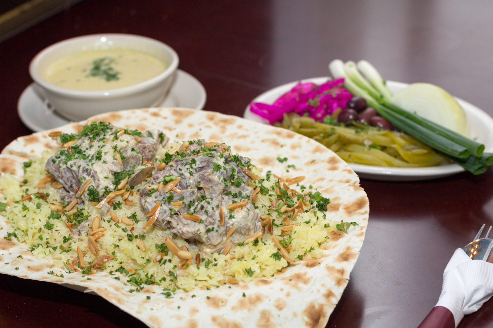
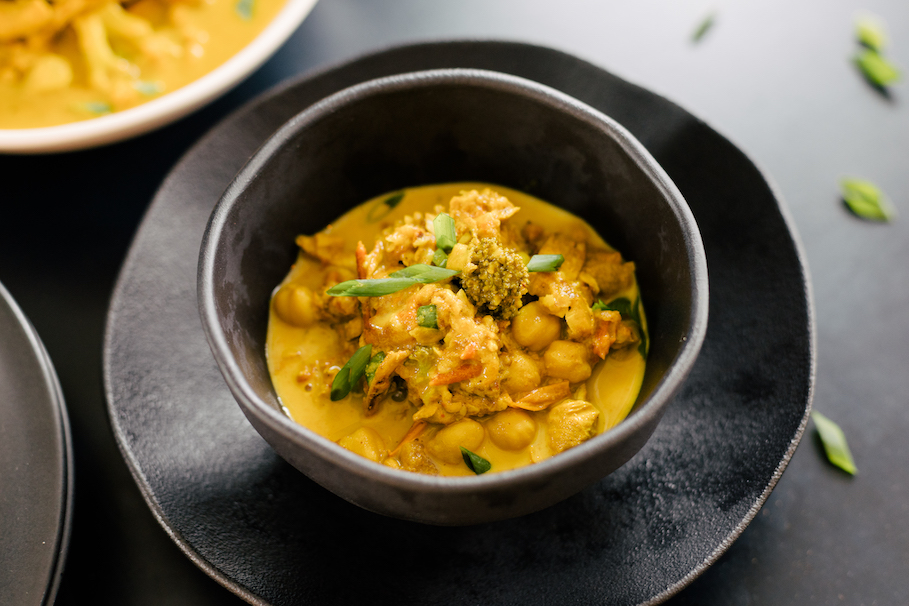
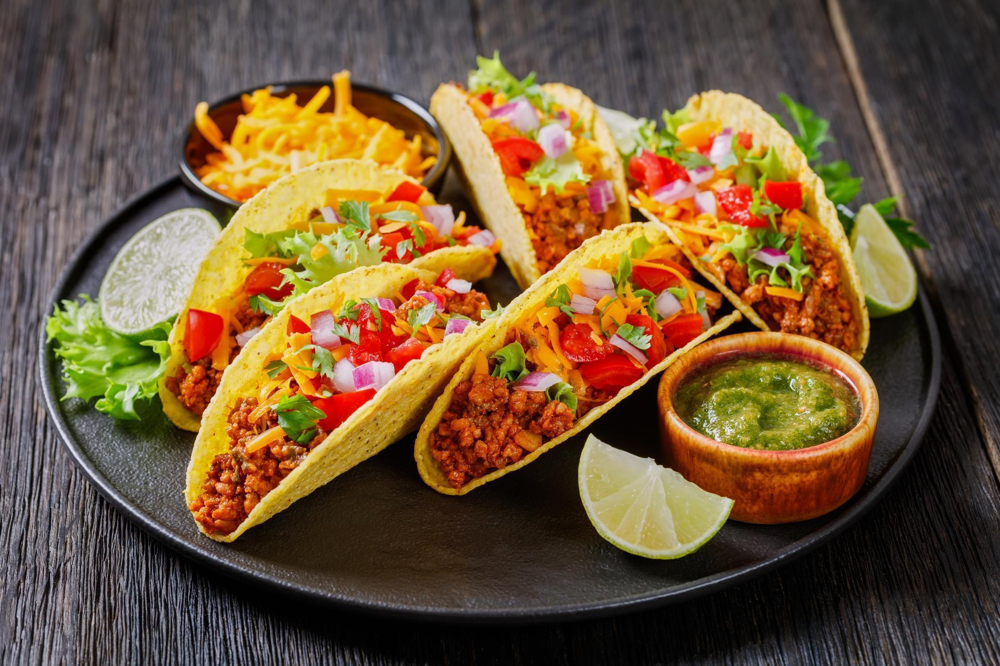

Cristo Redentor, no Brasil

A feijoada é um prato tradicional brasileiro, conhecido por sua combinação saborosa de feijão preto e carne.
Grande Muralha da China
Os dumplings são uma iguaria chinesa recheada com carne ou vegetais, frequentemente servidos no vapor ou fritos.
Machu Picchu, no Peru
O ceviche é um prato típico do Peru, preparado com peixe fresco marinado em suco de limão e especiarias.
Petra, na Jordânia
O mansaf é um prato tradicional da Jordânia feito com carne de cordeiro, arroz e iogurte seco.
Coliseu de Roma, na Itália

A pizza, originária da Itália, é famosa mundialmente por sua massa fina, molho de tomate e queijo derretido.
Taj Mahal, na Índia
O curry indiano é um prato aromático feito com especiarias ricas e uma base de carne ou vegetais.
Chichén Itzá, no México
Os tacos mexicanos são conhecidos por sua versatilidade, recheados com carne, vegetais e molhos.